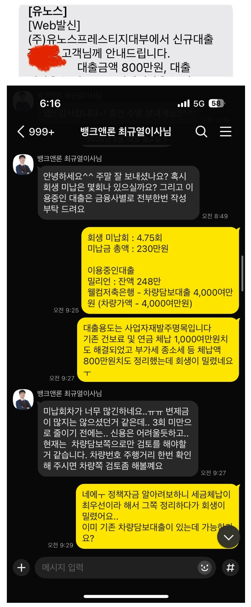
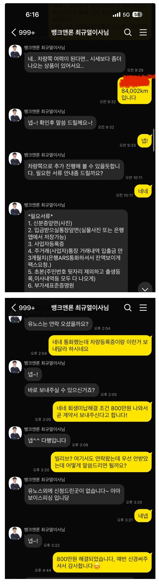

[개인회생자대출] 저와 비슷한 사례이신 분들이 많이 계실듯 해서 도움이 되고자 후기 남깁니다. [두번째 도움, 최규열이사님 늘 감사합니다]
후기 작성 전 우선 저와 비슷한 사례이신 분들이 많이 계실듯 해서 조건 먼저 적어보겠습니다
저는 개인회생 60회차중 28회차 진행중인 사업자입니다. 사업을 하면서 매번 느끼지만 예상치 못한 자금이 들어갈 상황이 많이 생기는데 개인회생중이라 답답할 때가 정말 많았습니다..
작년 초쯤에 카페에서 뱅크앤론 최규열이사님을 알게되어 급한 자금 도움을 받았었는데요,
이번에는 새로운 사업을 준비하면서 두어달 매출이 안나와서 생활비와 집기비용이 부족하여 혹시나 하는 마음으로 이사님께 다시 연락을 드려봤습니다.
기대출도 많고 회생 미납이 4.75회 정도가 있어서 신용으로는 대출이 어렵지만 차량담보대출로 도움을 받았습니다.
기존에 차량으로 이미 4,000여만원 차량담보대출이 있어서 기대 조차 없었는데 시세보다 더 쳐주는 곳이 있다하여 희망을 가졌습니다…
(차량은 테슬라Y롱레인지 / 차량가액 4,000여만원입니다)
총 세군데 심사를 바로 진행했는데 두군데 부결이 나와서 사실 이번엔 도움을 못받을거라 생각했어요,
그런데 마지막 업체에서 다행이 회생 미납금 해결조건으로 800만원 승인이 나왔습니다!
구체적인 제 스펙을 말씀드리면
세금체납x 연체x
회생 60회차 중 28회차 변제금 46만원
미납 4.75회 (230만)
사업자이고 작년 기준 매출 2.3억 정도 나오고
회생 이후 기대출 3건 중 2건 남아있고 총 부채 4500만원입니다
자가x 자차o -> 차량담보대출 (기존 차량담보대출이 있었는데도 승인이 나왔어요) 으로 도움을 받았습니다
대출한도는 얼마가 나왔는지는 정확히 모르겠습니다만
업체쪽에서 얼마정도 필요하냐고 해서 회생미납대금 포함 800정도 나오면 좋겠다고 하니 그렇게 심사를 진행해주셨어요!
작년에 이어 이번에도 정말 어려운 상황이였는데 포기하지 않고 끝까지 친절하게 상담해주신 최규열이사님께 감사드립니다?
필요서류는 스샷에 기제되어있으며 자동차담보대출이다보니 업체쪽에서 차량사진과 자동차등록증 요청하셨습니다ㅎㅎ
정말 급할때 힘이 많이 되어주시는 뱅크앤론과 최규열이사님 다시 한번 감사드립니다! 후기 보시는 많은 분들도 도움받아서 힘든시기 잘 극복하시길 바라겠습니다.


https://cafe.naver.com/cityman88/311339